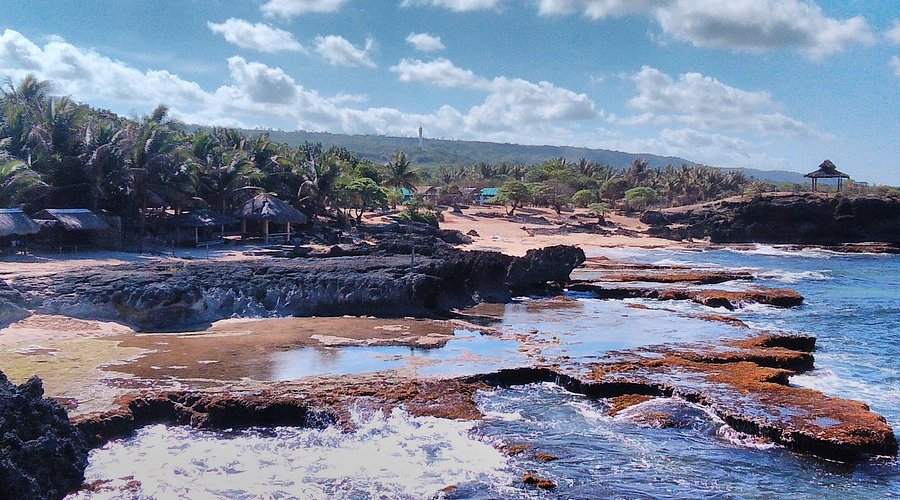
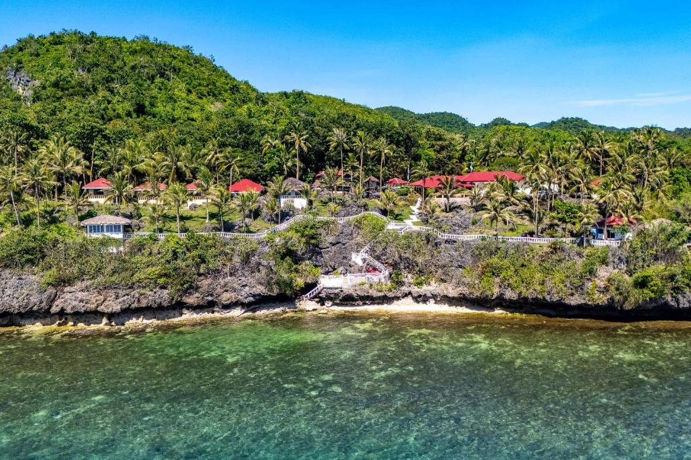
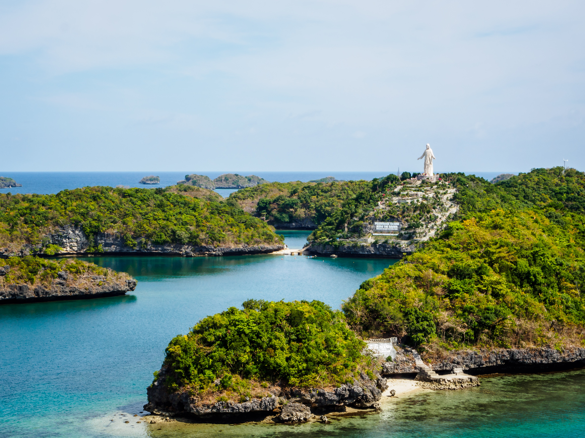

Pangasinan is a province blessed with stunning beaches, hidden lagoons, and scenic viewpoints. Its destinations combine natural beauty, adventure, and peaceful retreats—perfect for travelers looking to relax, explore, or capture breathtaking views.
Featured Destinations:
Bolinao White Beach

Quick Facts
- Location: Bolinao, Pangasinan, Philippines
- Nickname: The Relaxation Coast
- Type: White sand with gentle waves
- Activities: Swimming, snorkeling, camping, and photography
- Accessibility: Around 6–7 hours by land from Metro Manila
- Nearby attractions: Cape Bolinao Lighthouse, Patar Beach, Enchanted Cave
A serene stretch of fine white sand and calm waters, Bolinao White Beach is perfect for swimming, sunbathing, and leisurely strolls along the shore. Its laid-back vibe makes it a favorite for families and beach lovers alike.
View MoreAnda Blue Lagoon

Quick Facts
- Location: Cabungan, Anda, Pangasinan, Philippines
- Nickname: The Hidden Gem of Pangasinan
- Type: Rocky lagoon with crystal-clear turquoise waters
- Activities: Swimming, snorkeling, photography
- Accessibility: About 4–5 hours by road from Metro Manila
- Nearby attractions: Tondol White Beach, Cabongaoan Beach, Death Pool
Tucked away in Anda, this turquoise lagoon is a hidden gem. Its crystal-clear waters and scenic surroundings make it ideal for swimming, photography, and quiet relaxation away from crowded beaches.
View MoreLucap Wharf

Quick Facts
- Location: Alaminos, Pangasinan, Philippines
- Nickname: The Gateway to the Hundred Islands
- Type: Coastal wharf / port area
- Activities: Boat tours, island hopping, sightseeing, photography
- Accessibility: Easily accessible by road from Alaminos City proper
- Nearby attractions: Hundred Islands National Park, Alaminos City View Deck, Bolo Beach
Lucap Wharf is the main jump-off point for visitors heading to the famous Hundred Islands. It’s a lively coastal area where boats line up, ready to take tourists on island-hopping adventures. The wharf itself offers scenic sea views, especially during sunrise, and gives a glimpse of the bustling local tourism scene.
View MoreAlaminos City View Deck
Quick Facts
- Location: Alaminos, Pangasinan, Philippines
- Nickname: The City Above the Islands
- Type: Elevated viewpoint
- Activities: Sightseeing, photography, sunset viewing
- Accessibility: Reachable by road from Alaminos City proper
- Nearby attractions: Hundred Islands National Park, Lucap Wharf, Bolo Beach
Offering panoramic views of Alaminos City and glimpses of the Hundred Islands, this viewpoint is perfect for photography, sunrise or sunset watching, and appreciating the province’s scenic landscapes from above.
View MoreMinor Basilica of Our Lady of Manaoag
Quick Facts
- Location: Milo Street, Manaoag, Pangasinan, Philippines
- Nickname: The Pilgrimage Heart of Pangasinan
- Type: Religious site / Catholic basilica
- Activities: Prayer, attending mass, pilgrimage, sightseeing
- Accessibility: Easily accessible by road, around 4–5 hours from Metro Manila
- Nearby attractions: Manaoag Mountain Viewpoint, local souvenir shops, Mapandan countryside, San Jacinto town
- Established: circa 1600
- Feast day: Third Wednesday after Easter and first Sunday of October
A peaceful highland spot near the pilgrimage town of Manaoag, this viewpoint offers sweeping views of mountains, valleys, and the surrounding countryside—a tranquil escape for reflection and nature lovers.
View More